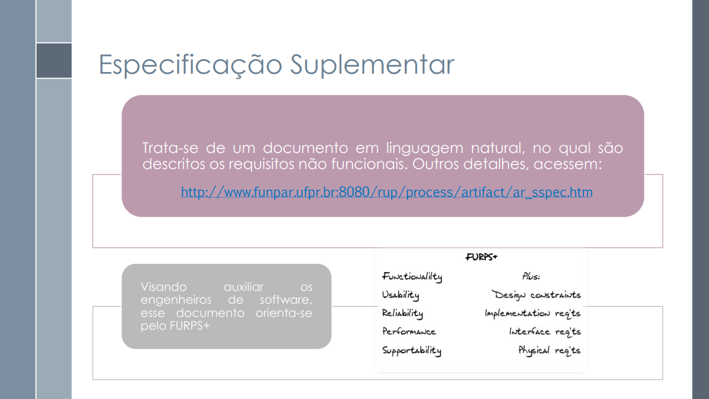
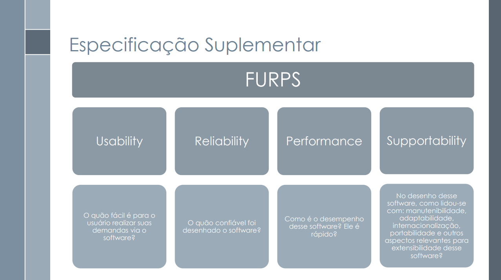

Especificação Suplementar
1. Introdução
2. Finalidade
3. Metodologia
- F - Functionality (Funcionalidade): engloba os aspectos funcionais do software, isto é, os comportamentos e serviços que ele deve fornecer. Nesta categoria, estão incluídos os requisitos já detalhados por meio dos casos de uso.
- U - Usability (Usabilidade): refere-se à qualidade da interação do usuário com o sistema. Leva em conta princípios de usabilidade como os propostos por Nielsen (PREECE; ROGERS; SHARP, 2005, p. 48-49), questionando, por exemplo, "quão fácil é para o usuário realizar suas tarefas com o software?"
- R - Reliability (Confiabilidade): diz respeito à robustez e integridade do sistema, incluindo requisitos como frequência e severidade de falhas, tempo médio entre falhas, capacidade de recuperação, e interoperabilidade.
- P - Performance (Desempenho): abrange os requisitos relacionados ao desempenho do sistema, como tempo de resposta, uso de recursos (memória, CPU), disponibilidade e escalabilidade.
- S - Supportability (Suportabilidade): agrupa características que facilitam o suporte e a manutenção do sistema, incluindo testabilidade, adaptabilidade, compatibilidade, escalabilidade, manutenibilidade, localizabilidade, entre outras.
- “+” - Outros requisitos não funcionais: esta categoria contempla restrições adicionais que não se enquadram nas anteriores, como:
- Requisitos de design: imposições sobre ferramentas, padrões ou estilos de desenvolvimento.
- Requisitos de implementação: especificações relacionadas ao código, como uso obrigatório de determinadas linguagens ou frameworks.
- Requisitos de interface: restrições específicas sobre como o sistema deve interagir com o usuário.
- Requisitos físicos: limitações de hardware, como dimensões, materiais ou peso.
Info
Os requisitos não funcionais presentes buscam ser mensuráveis, a fim de satisfazer o critério de aceitação/verificabilidade.
4. Observação
5. Especificação Suplementar
5.1 Funcionalidades
5.2 Usabilidade
Tabela 1: Requisitos não funcionais de Usabilidade
| ID | Descrição do Requisito Não Funcional |
|---|---|
| RNF01 | O sistema deve manter um padrão de cores, fontes, botões e posicionamento dos elementos da interface em todas as telas, garantindo consistência visual. |
| RNF02 | Toda ação realizada pelo usuário deve gerar um feedback visual ou sonoro imediato, para garantir que o usuário compreenda o resultado da sua interação. |
| RNF03 | O sistema deve permitir a alteração do tamanho da fonte em toda a interface. |
| RNF04 | O sistema deve oferecer a opção de ativar o modo noturno, alterando o esquema de cores para tons escuros. |
| RNF05 | O sistema deve ser suficientemente intuitivo para que um novo usuário consiga concluir tarefas principais em até 5 minutos, sem depender de ajuda externa. |
| RNF06 | A interface do sistema deve ser responsiva, adaptando-se automaticamente a diferentes tamanhos, resoluções e orientações de tela. |
| RNF07 | O sistema deve informar o usuário, em tempo real, sobre o andamento de processos como carregamento de dados, envio de formulários ou sincronização, por meio de barras de progresso, ícones animados ou mensagens de status. |
| RNF08 | O usuário deve poder desfazer ou refazer ações como desfavoritar indicadores, redefinir filtros ou cancelar comandos, evitando que erros exijam reinício completo da interação. |
| RNF09 | O sistema deve alertar o usuário antes de ações críticas, validar os dados inseridos e exibir mensagens de erro claras, sem jargões técnicos. |
Fonte: Ludmila Nunes, 2025.
5.3 Confiabilidade
Tabela 2: Requisitos não funcionais de Confiabilidade
| ID | Descrição do Requisito Não Funcional |
|---|---|
| RNF10 | O sistema deve apresentar tempo médio entre falhas (MTBF - Mean Time Between Failures) superior a 100 horas de uso contínuo. |
| RNF11 | O aplicativo deve recuperar automaticamente sessões interrompidas e preservar a integridade dos dados mesmo em encerramentos inesperados. |
| RNF12 | Em caso de falha, o sistema deve registrar o erro localmente e sincronizar com o servidor assim que houver conexão, para fins de diagnóstico e correção. |
| RNF13 | O aplicativo deve manter a integridade dos dados mesmo em casos de encerramento abrupto ou desligamento inesperado do dispositivo. |
| RNF14 | O sistema deve oferecer mensagens de erro compreensíveis e orientações claras para o usuário em caso de falhas, sem exibir códigos técnicos confusos. |
| RNF15 | A comunicação entre o aplicativo e os servidores do IBGE deve utilizar protocolos seguros (ex: HTTPS), garantindo a confiabilidade na transferência de dados. |
| RNF16 | O aplicativo deve passar por testes de estresse e de carga para garantir seu funcionamento estável mesmo com picos de acesso simultâneo. |
| RNF17 | O sistema deve garantir interoperabilidade com diferentes versões dos principais sistemas operacionais móveis (Android e iOS), mantendo a estabilidade entre atualizações. |
Fonte: Laryssa Felix, 2025.
5.4 Desempenho
Tabela 3: Requisitos não funcionais de Desempenho
| ID | Descrição do Requisito Não Funcional |
|---|---|
| RNF18 | O sistema deve apresentar tempo de resposta inferior a 2 segundos para carregamento de telas principais, como visualização de notícias, dados e gráficos. |
| RNF19 | O aplicativo deve utilizar no máximo 40% da CPU do dispositivo durante operações de uso intenso, como filtros de dados ou geração de gráficos. |
| RNF20 | O consumo de memória RAM pelo aplicativo não deve ultrapassar 250 MB em uso comum, garantindo desempenho mesmo em smartphones intermediários. |
| RNF21 | O aplicativo deve estar disponível para acesso 99,5% do tempo ao longo do mês, considerando atualizações, falhas e manutenções. |
| RNF22 | O sistema deve suportar pelo menos 5.000 acessos simultâneos sem degradação perceptível de desempenho. |
| RNF23 | O tempo de sincronização de dados com o servidor não deve ultrapassar 5 segundos em redes 4G ou superiores. |
| RNF24 | O aplicativo deve ter transições de até 1 segundo entre seções e tempo de inicialização inferior a 3 segundos em dispositivos de entrada compatíveis. |
| RNF25 | O sistema deve realizar compressão de dados para reduzir o tempo de carregamento de conteúdo, principalmente em conexões móveis com baixa velocidade. |
| RNF26 | O desempenho do aplicativo deve ser validado em pelo menos três modelos diferentes de smartphones (baixo, médio e alto desempenho), garantindo funcionalidade mínima em cada um deles. |
Fonte: Laryssa Felix, 2025.
5.5 Suportabilidade
Tabela 4: Requisitos não funcionais de Suportabilidade
| ID | Descrição do Requisito Não Funcional |
|---|---|
| RNF27 | O sistema deve estar totalmente em conformidade com a LGPD (Lei nº 13.709/2018), garantindo tratamento legal, seguro e transparente de dados pessoais. |
| RNF28 | Todos os dados pessoais devem ser criptografados em trânsito (TLS 1.2+) e em repouso (AES-256 ou superior). |
| RNF29 | O sistema deve criptografar todos os dados pessoais armazenados utilizando algoritmos robustos como AES-256. |
| RNF30 | O sistema deve exibir termos de uso e política de privacidade claros antes da coleta de dados, acessíveis na tela inicial e no menu de configurações. |
| RNF31 | O sistema deve registrar o consentimento explícito do usuário para o uso de seus dados pessoais. |
| RNF32 | O sistema deve obter consentimento explícito para uso de dados pessoais e permitir sua correção, exclusão ou recusa de coleta anônima. |
| RNF33 | O sistema deve registrar e proteger logs de autenticação e envio de dados, com retenção mínima de 5 anos e acesso restrito por perfil. |
| RNF34 | Os logs do sistema devem ser armazenados de forma segura e imutável por no mínimo 5 anos para fins de auditoria. |
| RNF35 | O acesso aos logs deve ser restrito a usuários autorizados com controle de acesso baseado em perfis. |
| RNF36 | O sistema deve permitir a geração de relatórios de auditoria sob demanda. |
| RNF37 | O sistema deve realizar backups automáticos dos dados críticos diariamente, com retenção mínima de 30 dias e possibilidade de restauração em até 24 horas. |
Fonte: Caio Duarte, 2025.
5.6 Restrições de Design
Tabela 5: Requisitos não funcionais de Restrições de Design
| ID | Descrição do Requisito Não Funcional |
|---|---|
| RNF38 | O design visual deve seguir a identidade institucional do IBGE, com uso oficial das cores e logotipo conforme diretrizes. |
| RNF39 | O sistema deve seguir o princípio da responsividade, adaptando-se automaticamente a diferentes tamanhos e orientações de tela. |
| RNF40 | O design do sistema deve priorizar simplicidade, clareza e fluidez, facilitando a navegação e interpretação de dados com gráficos e elementos visuais intuitivos. |
| RNF41 | A experiência do usuário deve ser priorizada, com foco em fluxos intuitivos e navegação direta, minimizando a quantidade de cliques até a informação desejada. |
| RNF42 | O design da informação deve facilitar a interpretação de gráficos, mapas e tabelas, com uso de legendas claras, cores contrastantes e ícones intuitivos. |
| RNF43 | O sistema deve ter arquitetura modular e design escalável para futura adição de novos dados, filtros e relatórios. |
| RNF44 | O aplicativo deve estar apto a funcionar de forma offline para consulta de dados previamente sincronizados, com atualização automática quando a conexão for restabelecida. |
Fonte: Laryssa Felix, 2025.
5.7 Requisitos de Implementação
Tabela 6: Requisitos não funcionais de Implementação
| ID | Descrição do Requisito Não Funcional |
|---|---|
| RNF45 | O aplicativo deve ser desenvolvido com tecnologias e frameworks compatíveis com Android e iOS, adaptando-se a diversos tamanhos de tela. |
| RNF46 | O código-fonte deve seguir boas práticas, com versionamento, documentação e uso legal de bibliotecas licenciadas. |
| RNF47 | O sistema deve ser compatível com bibliotecas gráficas modernas para renderização de gráficos estatísticos. |
| RNF48 | O aplicativo deverá utilizar frameworks responsivos que permitam adaptação automática a diferentes tamanhos de tela. |
| RNF49 | O tempo de inicialização do aplicativo não deve ultrapassar 3 segundos em dispositivos de entrada compatível. |
| RNF50 | O aplicativo deve ser projetado com arquitetura modular, facilitando futuras manutenções e atualizações. |
Fonte: Joao Felix, 2025.
5.8 Requisitos de Sistema de Ajuda e de Documentação de Usuário Online
Tabela 7: Requisitos não funcionais de Ajuda e de Documentação Online
| ID | Descrição do Requisito Não Funcional |
|---|---|
| RNF51 | O aplicativo deve conter uma seção de ajuda com FAQs, tutoriais e instruções, redigidas em linguagem simples e acessível em diferentes dispositivos. |
| RNF52 | A documentação do usuário deve estar disponível online e acessível por meio de link no próprio aplicativo. |
| RNF53 | A seção de ajuda deve conter tópicos de perguntas frequentes (FAQ) e tutoriais passo a passo ilustrados. |
| RNF54 | O conteúdo de ajuda deve ser escrito em linguagem simples, adequada ao público-alvo geral e não técnico. |
| RNF55 | A documentação online deve ser responsiva e acessível em diferentes dispositivos (mobile, tablet e desktop). |
| RNF56 | O sistema deve permitir atualizações periódicas da documentação, sem necessidade de atualização do aplicativo principal. |
Fonte: Joao Felix, 2025.
5.9 Requisitos de Licenciamento
Tabela 8: Requisitos não funcionais de licenciamento
| ID | Descrição do Requisito Não Funcional |
|---|---|
| RNF57 | O aplicativo deve exibir os termos de uso e política de privacidade no primeiro acesso do usuário. |
| RNF58 | Todos os dados exibidos devem respeitar as licenças de uso e conter as devidas citações e fontes do IBGE. |
| RNF59 | O software e componentes de terceiros devem ser licenciados adequadamente, preferencialmente sob licenças abertas compatíveis com uso governamental. |
| RNF60 | Componentes de terceiros utilizados no aplicativo devem estar devidamente licenciados e creditados. |
| RNF61 | O uso do aplicativo será gratuito e restrito apenas a fins informativos e educacionais, conforme normas institucionais. |
Fonte: Joao Felix, 2025.
5.10 Observações Legais, de Copyright e Outras
Tabela 9: Requisitos de Observações Legais e de Copyright
| ID | Descrição do Requisito Não Funcional |
|---|---|
| RNF62 | O sistema deve respeitar as leis brasileiras vigentes relacionadas à proteção de dados, propriedade intelectual, acessibilidade digital e direitos do consumidor. |
| RNF63 | Todos os conteúdos exibidos (textos, imagens, gráficos e dados estatísticos) devem conter as devidas citações e fontes. |
| RNF64 | O código-fonte e os componentes do sistema devem respeitar as licenças de software utilizadas, evitando o uso de bibliotecas sem permissão legal. |
| RNF65 | A distribuição do aplicativo deve incluir os termos de uso e a política de privacidade acessíveis diretamente na tela inicial e dentro do menu de configurações. |
| RNF66 | O sistema deve atender às diretrizes nacionais e internacionais de acessibilidade, incluindo compatibilidade com leitores de tela e o Modelo de Acessibilidade de Governo Eletrônico (eMAG), garantindo uso por pessoas com deficiência. |
| RNF67 | O uso do nome, logotipo e identidade visual do IBGE deve seguir as diretrizes institucionais. |
| RNF68 | O aplicativo deve ser registrado junto ao órgão responsável, quando aplicável, garantindo proteção contra uso indevido ou cópia não autorizada. |
| RNF69 | Qualquer coleta de dados estatísticos anônimos para fins de melhoria do sistema deve ser previamente autorizada pelo usuário, com opção clara de recusa. |
Fonte: Letícia Monteiro, 2025.
5.11 Padrões Aplicáveis
Tabela 10: Padrões Aplicáveis
| ID | Padrão Aplicável | Descrição |
|---|---|---|
| RNF70 | eMAG | O Modelo de Acessibilidade de Governo Eletrônico define diretrizes para garantir que o sistema seja acessível a todas as pessoas, inclusive com deficiência. |
| RNF71 | WCAG 2.1 (AA) | As Diretrizes de Acessibilidade para Conteúdo Web garantem que o sistema possa ser utilizado por usuários com diferentes necessidades, incluindo leitores de tela. |
| RNF72 | LGPD | A Lei Geral de Proteção de Dados regula o tratamento de dados pessoais e deve ser integralmente seguida pelo sistema. |
| RNF73 | ISO/IEC 27001 | Padrão internacional para gestão da segurança da informação, recomendável para proteger dados sensíveis do sistema. |
| RNF74 | ABNT NBR 9241 | Norma brasileira que trata de ergonomia na interação humano-computador, aplicável à interface do sistema. |
| RNF75 | Material Design ou Bootstrap | Padrões de design visual para manter consistência na interface do usuário. |
| RNF76 | Licenças de Código Aberto (MIT, GPL, etc.) | O uso de bibliotecas e frameworks deve respeitar suas respectivas licenças de uso e distribuição. |
Fonte: Gabriel Pinto , 2025.
5.12 Requisitos de Interface
Tabela 11: Requisitos de Interface
| ID | Descrição do Requisito Não Funcional |
|---|---|
| RNF77 | A interface do aplicativo deve seguir as diretrizes de design responsivo, garantindo usabilidade adequada em dispositivos móveis e tablets. |
| RNF78 | Os elementos de navegação devem ser intuitivos, com rótulos claros e acessíveis em até dois toques, utilizando linguagem adequada ao público geral. |
| RNF79 | Todas as telas devem possuir contraste mínimo de 4.5:1 entre texto e plano de fundo, conforme as diretrizes WCAG 2.1 de acessibilidade digital. |
| RNF80 | O sistema deve apresentar feedback visual e/ou sonoro para todas as ações do usuário, como cliques, carregamentos e envios de formulários. |
| RNF81 | Os textos exibidos na interface devem ser redigidos em linguagem clara e objetiva, adequada ao público geral, evitando jargões técnicos. |
| RNF82 | Os formulários devem apresentar mensagens de erro específicas e orientativas, posicionadas próximas aos campos com problemas. |
| RNF83 | A interface deve ser compatível com leitores de tela, permitindo navegação e interpretação completa do conteúdo por pessoas com deficiência visual. |
| RNF84 | Os gráficos e mapas exibidos devem possuir alternativas textuais ou descrições acessíveis para garantir entendimento a todos os usuários. |
Fonte: Laryssa Felix, 2025.
5.13 Requisitos Físicos
Tabela 12: Requisitos Físicos
| ID | Descrição do Requisito Não Funcional |
|---|---|
| RNF85 | O aplicativo deve ser compatível com dispositivos móveis que atendam aos requisitos mínimos de hardware, como memória RAM de 2GB e Android 8.0 ou superior. |
Fonte: Laryssa Felix, 2025.
6. Bibliografia
BRASIL. Ministério da Ciência, Tecnologia, Inovações e Comunicações. Secretaria-Executiva. Diretoria de Tecnologia da Informação. Coordenação Geral de Sistemas. Especificação Suplementar: Sigla do Projeto – Nome do Projeto. Versão 1.0. Brasília: MCTIC. Disponível em: https://aprender3.unb.br/pluginfile.php/3096129/mod_resource/content/2/SiglaProjeto_EspecificacaoSuplementar.pdf . Acesso em: 14 maio 2025.
SERRANO, Milene; SERRANO, Maurício. Requisitos – Aula 13. UnB, 2025, p. 28,29 e 30. Disponível em: https://aprender3.unb.br/pluginfile.php/3096108/mod_resource/content/1/Aula%2010.pdf. Acesso em: 14 maio 2025.
 
7. Histórico de Versões
Tabela 13: Histórico de versões
| Versão | Descrição | Autor | Data | Revisor |
|---|---|---|---|---|
| 1.0 | Criação do documento | Laryssa Felix | 14/05/2025 | João Félix |
| 1.2 | Tópico de introdução | João Félix | 14/05/2025 | Laryssa Felix |
| 1.3 | Tópicos de finalidade e metodologia | Laryssa Felix | 14/05/2025 | João Félix |
| 1.4 | Adição de RNF de suportabilidade | Caio Duarte | 17/05/2025 | Ludmila Nunes |
| 1.5 | Adição de RNF de usabilidade | Ludmila Nunes | 17/05/2025 | Caio Duarte |
| 1.6 | Adição de Padrões Aplicáveis | Gabriel Pinto | 17/05/2025 | Letícia Monteiro |
| 1.7 | Adição de RNF de confiabiliadade, desempenho e restrições de Design | Laryssa Felix | 17/05/2025 | João Félix |
| 1.8 | Adição de RNF de Implementação, Sistema de Ajuda e de Documentação de Usuário Online, Licenciamento | Joao Felix | 17/05/2025 | Laryssa Felix |
| 1.9 | Adição de RNF de Observações Legais, de Copyright e Outras | Letícia Monteiro | 18/05/2025 | Laryssa Felix |
| 2.0 | Adição de RNF de Requisitos de Interface e Requisitos Físicos | Laryssa Felix | 18/05/2025 | João Félix |
| 2.1 | Adição da bibliografia | Laryssa Felix | 17/05/2025 | João Félix |
| 2.2 | Adição de bibliografia | Mayara Marques | 17/05/2025 | Ludmila Nunes |
| 2.3 | Revisa artefato | Mayara Marques | 18/05/2025 | João Félix |
| 2.4 | Correção dos IDs | Laryssa Felix | 18/05/2025 | João Félix |
| 2.5 | Adicionando Rastreabilidade e Corrigindo IDs | Letícia Monteiro | 18/05/2025 | Laryssa Felix |
Fonte: Caio Duarte, Gabriel Pinto, João Félix, Laryssa Felix, Letícia Monteiro, Ludmila Nunes e Mayara Marques, 2025.